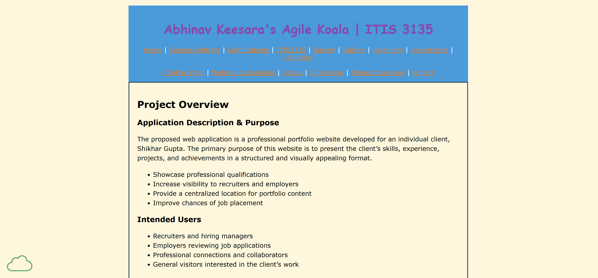

-
Design
- The page is visably appealing and mostly easy to read.
- The only thing that is difficult is the orange links on the blue is sometimes difficult but other than that it is great
- It follows the crap principles well
- The colors contrast well (outside of the links)
- The repitition is good, it is consitant but not redundant. The only deviation is the sitemap
- The page is well aligned, everything is consistant and straight forward making it easy to follow. The left alligned nature is very simple
- Everything is spaced out enough and there is no random empty spaces but enough deliniation between sections
-
Content
- The text is in a h1 for site
- The title is in h2
- There is no header or footer but the main has all the elements
- main does start with an h2
- the page has most of the required content
-
Requirements
- There is a sitemap and design descriptions that are all quality. They are structures and clear and have all the descriptive elements
- It is simple and easy to understand
- The client information is there and the purpose is clear and concise
- There is no Nav bar but it has all the nessesary locations and subsites